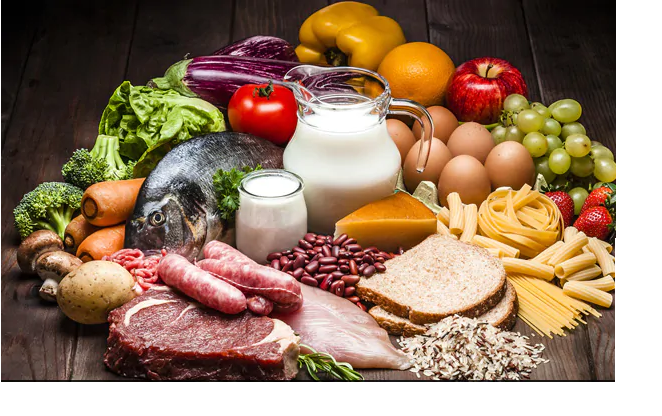
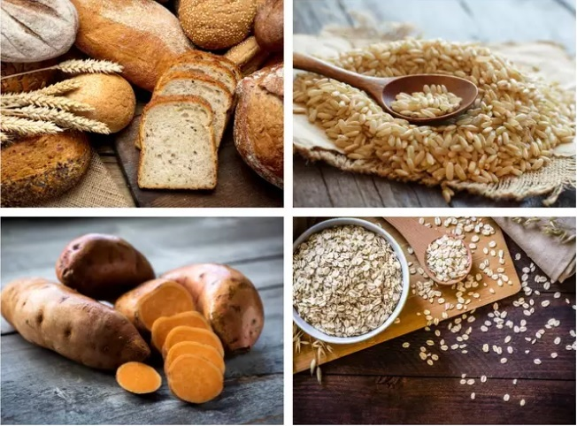
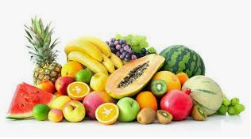

Proteins
Twenty-five percent of your daily nutritional intake should ideally come from healthy proteins found naturally (no shakes or powders please!). To begin with, let’s understand the TEF or Thermic Effect of Food, which is caused when you eat. The body uses its extra calories to process and digest this food. Of all the food groups, protein contains the highest TEF, potentially bringing it up to a whopping 30 percent, which is ten times more than the maximum of 3 per cent that fats offer.Protein is also a filling option, particularly animal sources of protein, so this prevents binge fests on unhealthy offerings, and makes sure your tummy feels satisfied in a good way. Protein is also a key nutrient in muscle-building, so when you take in a protein-rich diet, it helps convert fat to muscle, which in turn increases metabolism. So you’ll eat less, burn more, and stay strong – a win-win situation from every angle.

Carbohydrates
Carbohydrates are found in a wide array of both healthy and unhealthy foods—bread, beans, milk, popcorn, potatoes, cookies, spaghetti, soft drinks, corn, and cherry pie. They also come in a variety of forms. The most common and abundant forms are sugars, fibers, and starches.Foods high in carbohydrates are an important part of a healthy diet. Carbohydrates provide the body with glucose, which is converted to energy used to support bodily functions and physical activity. But carbohydrate quality is important; some types of carbohydrate-rich foods are better than others:The healthiest sources of carbohydrates—unprocessed or minimally processed whole grains, vegetables, fruits and beans—promote good health by delivering vitamins, minerals, fiber, and a host of important phytonutrients.Unhealthier sources of carbohydrates include white bread, pastries, sodas, and other highly processed or refined foods. These items contain easily digested carbohydrates that may contribute to weight gain, interfere with weight loss, and promote diabetes and heart disease.The Healthy Eating Plate recommends filling most of your plate with healthy carbohydrates – with vegetables (except potatoes) and fruits taking up about half of your plate, and whole grains filling up about one fourth of your plate.

Fats
Fat are an essential part of our diet and is important for good health. There are different types of fats, with some fats being healthier than others. To help make sure you stay healthy, it is important to eat unsaturated fats in small amounts as part of a balanced diet.When eaten in large amounts, all fats, including healthy fats, can contribute to weight gain. Fat is higher in energy (kilojoules) than any other nutrient and so eating less fat overall is likely to help with weight loss.Eating less saturated and trans fats may help lower your risk of heart disease. When buying products check the labels and choose the varieties that are lower in saturated and trans fats and higher in poly and monounsaturated fats.So a diet that is low in saturated fats and trans fats, but that also includes moderate amounts of unsaturated fats will help you stay healthy.
Vegetable
A diet rich in vegetables and fruits can lower blood pressure.A diet rich in vegetables and fruits can lower blood pressure, reduce the risk of heart disease and stroke, prevent some types of cancer, lower risk of eye and digestive problems, and have a positive effect upon blood sugar, which can help keep appetite in check.
Most vegetables are naturally low in fat and calories.
None have cholesterol. (Sauces or seasonings may
add fat, calories, and/ or cholesterol.)
Vegetables are important sources of many nutrients,
including potassium, dietary fiber, folate (folic acid),
vitamin A, and vitamin C. Diets rich in potassium may
help to maintain healthy blood pressure. Vegetable
sources of potassium include sweet potatoes, white
potatoes, white beans, tomato products (paste,
sauce, and juice), beet greens, soybeans, lima beans, spinach, lentils, and
kidney beans.
Dietary fiber from vegetables, as part of an overall healthy diet, helps
reduce blood cholesterol levels and may lower risk of heart disease. Fiber
is important for proper bowel function. I t helps reduce constipation and
diverticulosis. Fiber-containing foods such as vegetables help provide a
feeling of fullness with fewer calories.
Folate (folic acid) helps the body form red blood cells. Women of
childbearing age who may become pregnant should consume adequate
folate from foods, and in addition 400 mcg of synthetic folic acid from
fortified foods or supplements. This reduces the risk of neural tube
defects, spina bifida, and anencephaly during fetal development.
Vitamin A keeps eyes and skin healthy and helps to protect against
infections.
Vitamin C helps heal cuts and wounds and keeps teeth and gums healthy. Vitamin
C aids in iron absorption.
Fruits
Fruits are a good source of vitamins and minerals, recognized for their role in preventing vitamin C and vitamin A deficiencies. People who incorporate fruits and vegetables as part of a healthy eating pattern have a reduced risk of some chronic diseases. USDA's MyPlate encourages filling half of the plate with fruits and vegetables at mealtimes.Fruits are an important part of a healthy eating pattern and the source of many vital nutrients, including potassium, folate (folic acid), and antioxidants including polyphenols. Fruit such as blueberries, cranberries, strawberries and citrus also contain phytochemicals that are being studied for their added health benefits.
